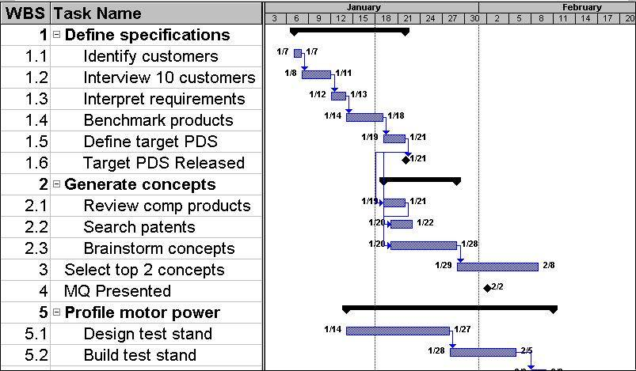
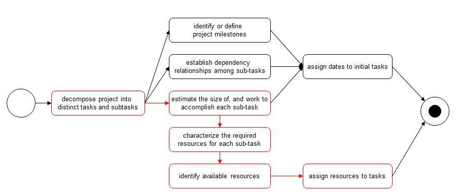

There is more than a little jargon associated with project
management. Most of these ideas are not very complex, but they
exist because they capture important concepts. As such
they are valuable, not merely for communication, but also
as conceptual foundation for discussion of project management
issues.
They are persented below in a conceptual order rather than
alphabetical order.
- Estimation
is the process of trying to determine
how much work will be involved in performing a
task or set of tasks. This process is informed
by notions of how the work will be done, how productive
we are likely to be at this work, and what problems are
likely to arise. All of these are somewhat speculative,
which is why it is called estimation rather
than prediction.
- Scheduling is the process of determining when what
work can be done, and using which resources. There
are a several different approaches that can be taken
to this process:
- bottom up ... add up the estimates for each task.
- backwards ... look at the planned completion date,
and figure out when each task must
be completed in order for the schedule
to work.
- top-down ... divide the available time into phases,
proportional in size to the estimated
difficulty.
- resource availability ... identify the critical resources,
and schedule the work that requires those
resources around their availability.
- dependency ordered ... pre-requisites tasks must be
completed before tasks that depend on
them can begin.
- risk ordered ... high risk items should be done sooner,
to allow maximum time to deal with problems
discovered in the process.
- priority ordered ... the tasks that must be completed should
be scheduled before optional tasks, so that
if we run short on time, it will be optional
tasks that go un-finished.
Attempting to use any one of these techniques in isolation is
probably a blunder, but it is probably important to consider all
of them. A good schedule is one that is informed by and responds
to all of these views.
Note, however, that scheduling is not merely a matter of adding
up a bunch of estimates. The time to complete a task depends on
what resources are applied to it, and when a task can be performed
depends on when those resources are available.
- Gantt chart
... a two-dimensional graphical representation of when tasks are
to be performed. Time is represented on the x-axis, and may be
marked with calendar dates or merely relative to the start of the
project. Each task is represented in a horizontal row, by a
box enclosing the starting and ending dates of that task.
Tasks may be grouped and ordered by resource, by time, or by some
work-breadown-structure.
Gantt charts can be used to represent plans, history, or both.
For plans, it is common to include arrows indicating dependencies.
For history, it is common to include indications of planned vs
actual start and completion dates.

- Work Breakdown Structure is a hierarchical decomposition
of a large or complex activity into smaller phases or individual sub-tasks.
Most problems admit of numerous decompositions. For this course, for example,
I have broken my preparation down by lecture, and within each lecture by
learning objective, organized in an outline-like fashion.
A good Work Breakdown Structure is one that enables
estimation, assignment, and progress tracking.
- Task ... the smallest unit of work used in the scheduling
process, an individual item in the work breakdown structure. Ideally a
task is something that can be assigned to a small group of people (e.g. 1)
and accomplished in a small amount of time (e.g. a few hours). But, in
a hierarchical work breakdown, what is a single task in a high level schedule
(e.g. prepare this course) could turn into hundreds of sub-tasks in a lower
level schedule.
- Task Dependency ... a relationship among tasks where task B
cannot be accomplished without some result from task A.
- Dependency Analysis is the process of examining a list of tasks
and determining what the dependencies among them are. The most common dependencies
are input/output (e.g. requirements validation cannot begin until we have completed
a few rounds of requirements development and elicitation), but more subtle ones are
possible (e.g. a Jury is not allowed to discuss a case until all testemony
has ended).
- Resource
A person, piece of equipment, facility or some other thing,
that is required to accomplish a particular task, and whose
availability cannot be taken for granted.
- Resource Dependency.
Tasks often require specific scarce resources, and cannot be completed
until and unless those resources are available. The availability of
those resources impose constraints on when activities can be scheduled.
These dependencies too must be recognized if we are to create a viable
schedule.
- External Dependency ... something that is required to perform
a task, and comes from another group (e.g. specifications, tools, components).
These are particularly important dependencies because we have much less control
over them, and less visibility into their progress. I, personally, attempt to
minimize my external dependencies, and (wherever possible) develop contingency
plans for what we would do if an external dependency falls through.
- PERT Chart ... a two-dimensional graphical representation
of the dependency relationships among activities (or resources). The
partial orderings discovered through dependency analysis
are often represented in a PERT chart.

- Critical Path ...
After we have broken our problem down into sub-tasks, and organized
them into parallel (independent) chains of inter-dependent tasks, it
will generally be found that some of the chains of inter-dependent tasks
are much longer than others. The (temporally) longest of these chains
is the one that will probably determine how long it will take to
accomplish the project, and is called the "critical path".
Anything that can be done to shorten, parallelize, or remove tasks
on the critical path is likely to accelerate completion of the project.
- Critical Resource ...
Often the critical path is the result of large number of tasks
that must be performed one after another, and cannot be parallelized
because of input-output dependencies. Sometimes, however, the long
chain has been created, not by task dependencies, but by resource
dependencies (e.g. it is easier to get the assignment done than to
schedule an appointment with the professor to present the assignment).
If this is the case, the resource that creates those dependencies is
called a "critical resource".
Anything that can be done to reduce the load on, or eliminate the
dependency on a critical resource is likely to accellerate the
completion of the project.
- slippage is the term used to describe an actual completion
date that is later than the planned completion date. There are a myriad
of possible causes (this course is built out of them).
- Status Tracking is the (hopefully daily) process of
monitoring what people are working on, what problems they are encountering,
and comparing that with the plan of record. The primary purpose is to
identify potential problems as quickly as possible, so that they can be
dealt with before the slippage becomes unrecoverable.
This can be done in formal meetings (e.g. a SCRUM stand-up) or informal
hallway conversations.
Typical problems uncovered in a status tracking might be:
- the person assigned to a task has concluded that the
assignment they were given no longer makes sense.
- someone has been working on a task, originally estimated at
1/2 day, for three days.
- someone is unable to make progress on a task because they
are blocked on an external dependency.
- someone is not working on the expected task because some
other (presumably more important) task has preempted it.